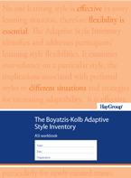

Experience Based Learning Systems, Inc. offers three self-scoring inventories based on the theory of experiential learning. The following assessment tools are offered through a partnership with Hay Group.
Kolb Learning Style Inventory (LSI) Version 4
") The Learning Style Inventory (LSI) describes the way you learn and how you deal with ideas and day-to-day situations. We all learn in different ways. This inventory can serve as a stimulus for you to interpret and reflect on the ways you prefer to learn in specific settings. Learning can be described as a cycle made up of four basic processes. The LSI takes you through those processes to give you better understanding of how you learn.
The Learning Style Inventory (LSI) describes the way you learn and how you deal with ideas and day-to-day situations. We all learn in different ways. This inventory can serve as a stimulus for you to interpret and reflect on the ways you prefer to learn in specific settings. Learning can be described as a cycle made up of four basic processes. The LSI takes you through those processes to give you better understanding of how you learn.
What’s New in LSI 4?
The Kolb Learning Style Inventory 4.0 is the first major revision of the KLSI since 1999 and the third since the original LSI was published in 1971. Based on many years of research involving scholars around the world and data from many thousands of respondents, the KLSI 4.0 includes four major additions:
A new 9 Learning Style Typology. Data from empirical and clinical studies over the years has shown that the original 4 learning style types – Accommodating, Assimilating, Converging and Diverging – can be refined further into a 9 style typology that better defines the unique patterns of individual learning styles and reduces the confusions introduced by borderline cases in the old 4 style typology. The new nine styles are Initiating, Experiencing, Imagining, Reflecting, Analyzing, Thinking, Deciding, Acting and Balancing.
Assessment of Learning Flexibility. The experiential learning styles are not fixed traits but dynamic states that can “flex” to meet the demands of different learning situations. For the first time the KLSI 4.0 includes a personal assessment of the degree to which a person changes their style in different learning contexts. The flexibility score also shows which learning style types the individual uses in addition to their dominant learning style type. This information can help individuals improve their ability to move freely around the learning cycle and improve their learning effectiveness.
An Expanded Personal Report Focused on Improving Learning Effectiveness. The new personal interpretative report has been redesigned to focus on improving personal learning effectiveness based on a detailed profile of how the person prefers to learn and their learning strength and weaknesses. It helps learners take charge of their learning with a planning guide for learning and tips for application in work and personal life.
Improved Psychometrics. The KLSI 4.0 maintains the high scale reliability of the KLSI 3.1 while offering higher internal validity. Score on the KLSI 4.0 are highly correlated with scores on the previous KLSI 3.1 thus maintaining the external validity that the instrument has shown over the years.
Kolb Adaptive Style Inventory (ASI)
The Adaptive Style Inventory (ASI) is a self-scoring inventory designed to help you understand and improve your approach to learning and problem solving situations. The purpose of the ASI is to help you understand how you adapt your learning style to four different kinds of learning situations: Acting situations, Valuing situations, Thinking situations and Deciding situations.
Kolb Learning Skills Profile (LSP)
The Learning Skills Profile (LSP) is self-scoring inventory designed to help you assess the major skills you may be called upon to use in your job. These learning skills are what enable you to do a job well. The Learning Skills Model encompasses four major skill types that directly correlate with four modes in the Cycle of Experiential Learning: Interpersonal skills, Informational skills, Analytical skills and Behavioral Skills. By comparing your skill level with your current job demands you can identify areas of strength and weakness that will assist you in setting goals for learning skills development.
Kolb Team Learning Experience (TLE)
") The Kolb Team Learning Experience will guide your team through the Cycle of Learning, providing your team with opportunities to experience, reflect, think, and do. Learn more…
The Kolb Team Learning Experience will guide your team through the Cycle of Learning, providing your team with opportunities to experience, reflect, think, and do. Learn more…